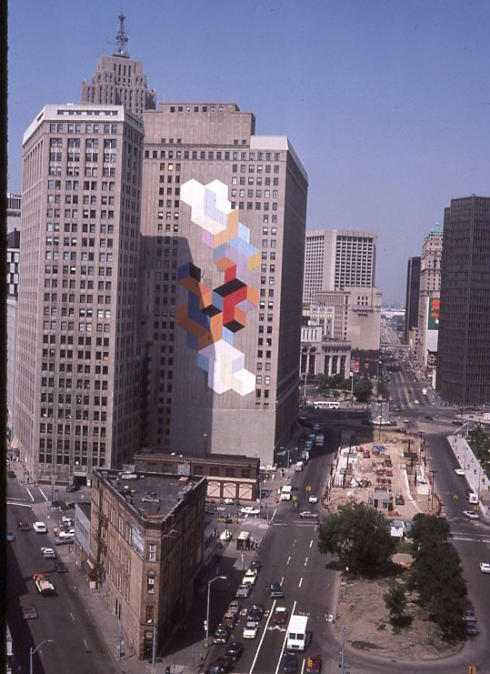
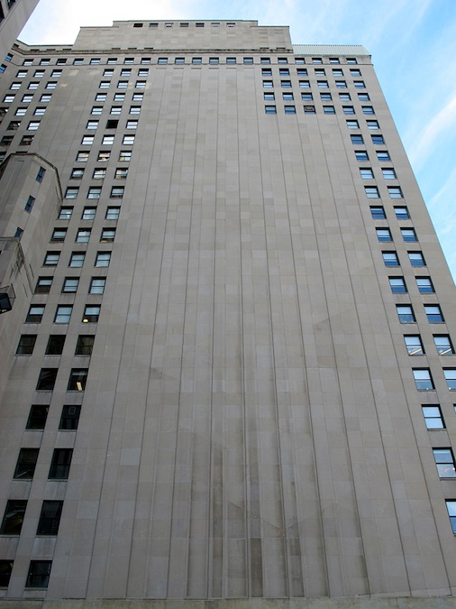

The first large-scale geometric mural to decorate a building in downtown Detroit, Message to Demar and Lauri is commissioned by the nonprofit Art for Detroit, funded by Detroit Renaissance, designed by Alan Loving (Rubello's classmate at Cass Tech) and painted on an expansive, east-facing back wall of the First National Building in 1971.
Covering 20,000 square feet, it is referred to in 1971 by Frank Kolbert, a member of Art for Detroit and a representative of the DIA, as "the largest painting of its kind in the world."5
Sandblasted off the wall of the First National sometime between 1980 and the mid-1990s. A faint impression of its outline remains. See FIRST NATIONAL BUILDING and MURALS.
